Diary-5-更寒风与更雾霾
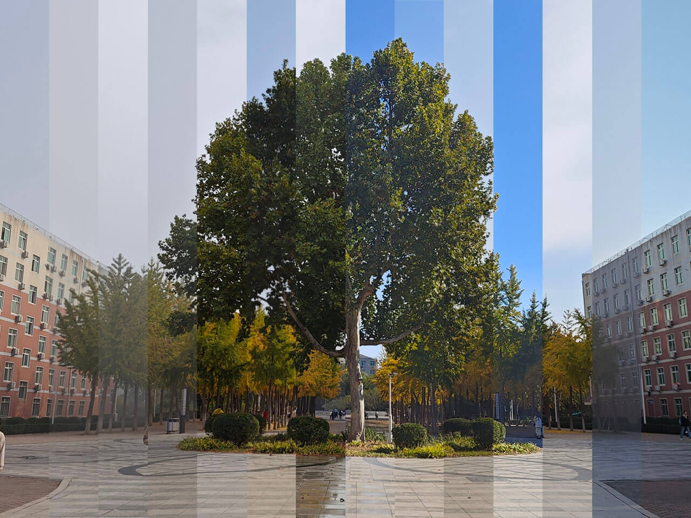
靠近梧桐的几棵银杏树死活不黄。
保定气候播报：
|
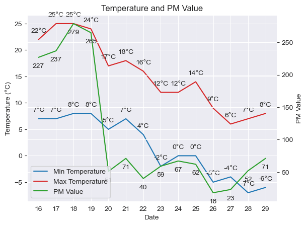
大概是气温变化最大的两周了。
本次博客添加了新的 html 效果，真是太棒了！
目录
10.30
大概是暖气点火的原因，雾霾依旧十分严重。
10.31
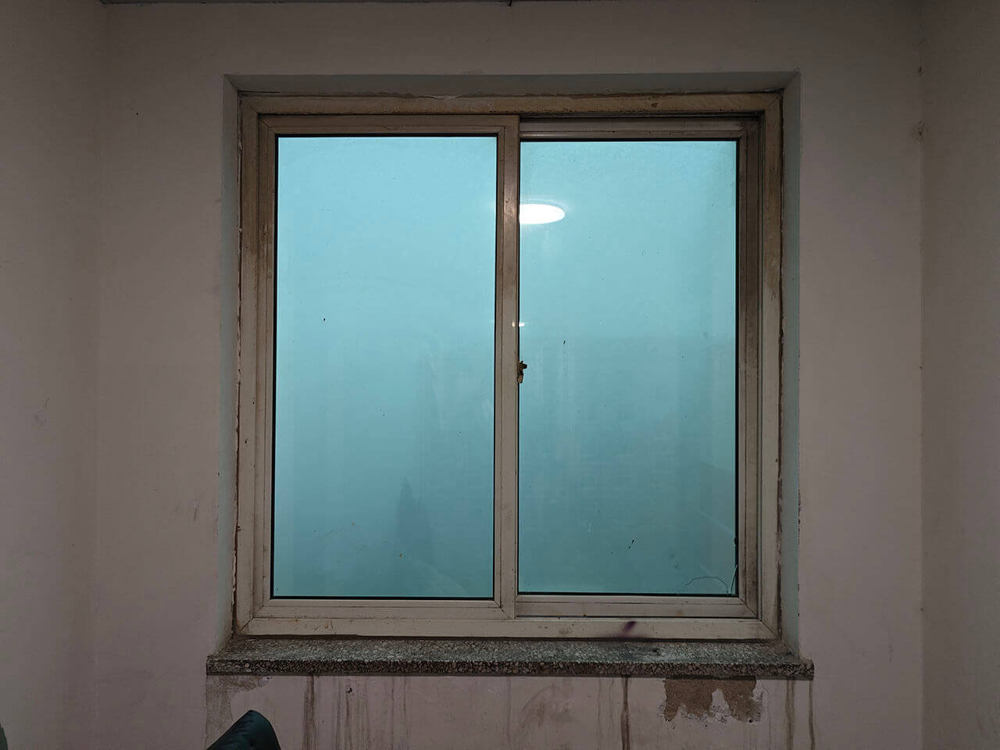
清早起来，好一片繁华景象！
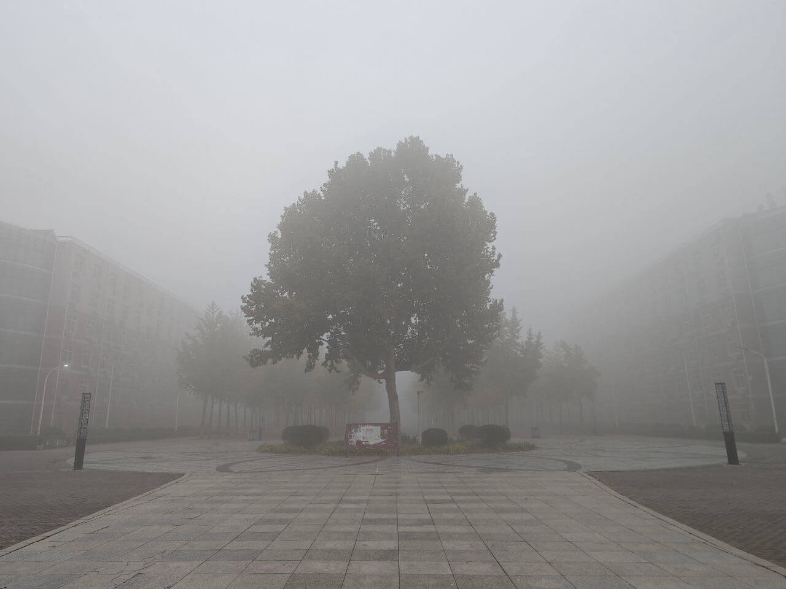
我觉得这种霾已经超出了 PS 去霾的范畴了。
【温馨提示】各位同学好：保定市气象台发布了大雾红色预警，10 月 31 日 19 时已启动重大气象灾害（大雾）三级应急响应，请转发给各班级提醒同学：增强安全防范意识，谨慎出行，如有外出务必遵守交通规则，确保安全。
11.1
组会时间。随着新研一的到来，导师让研三的师兄先汇报分享他们的工作进展，结果师兄讲了卷积神经网络讲了快两小时，困死我了呜呜呜，而且感觉师兄的工作好水 emmmm，就是个空洞卷积插入 CycleGAN 中，效果看上去也不是太好……也没有对比实验。
11.2
凡哥迷上了《完蛋！我被美女包围了！》游戏，大早上不去实验室搁着打游戏呢。结果检查宿舍的人看门没锁就进来检查宿舍了，二话不说把热水壶收走了，喜提 n 天不能泡脚。明明热水壶插在空调的插头上根本不会有用电安全的问题啊？实在接受不了这种侵占学生财产的行为，于是遍探讨了一下福州闽南优美脏话文化。
探讨结束。转手又买了个新的烧水壶。
11.3
雾霾结束了，即将到来的就是大幅降温，可能是冷空气把雾霾吹跑了吧。
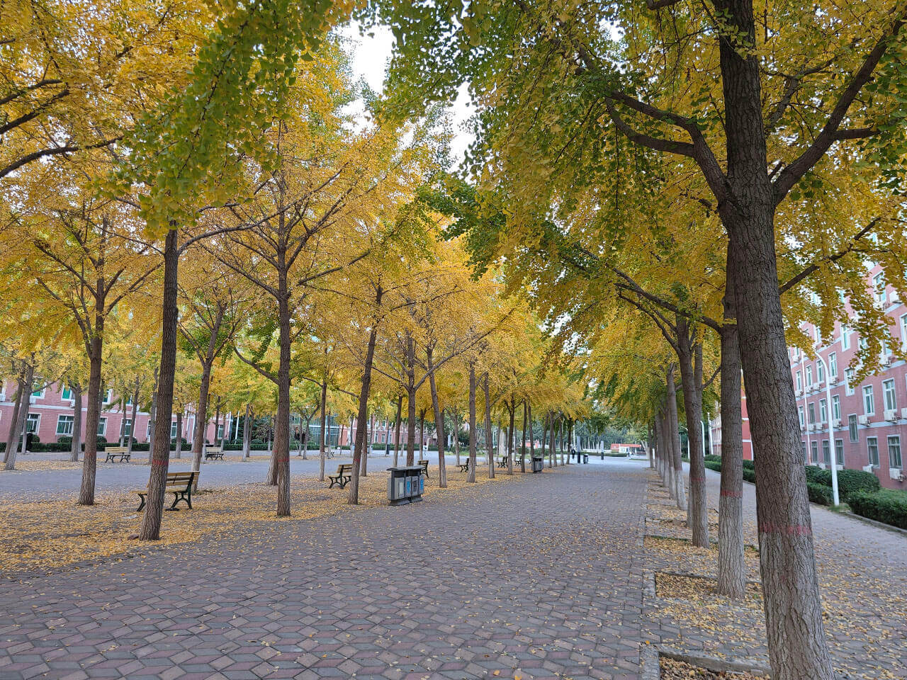
这张照片显示这个时候银杏还有些许绿色，但是随着冷空气下来，银杏马上就变得满是金黄，引来许多学生来银杏树下拍照。
11.5
早上还下起了雨，早已没有包背后放把伞的我发现把伞拉实验室了，于是又去小卖部再买了一把。
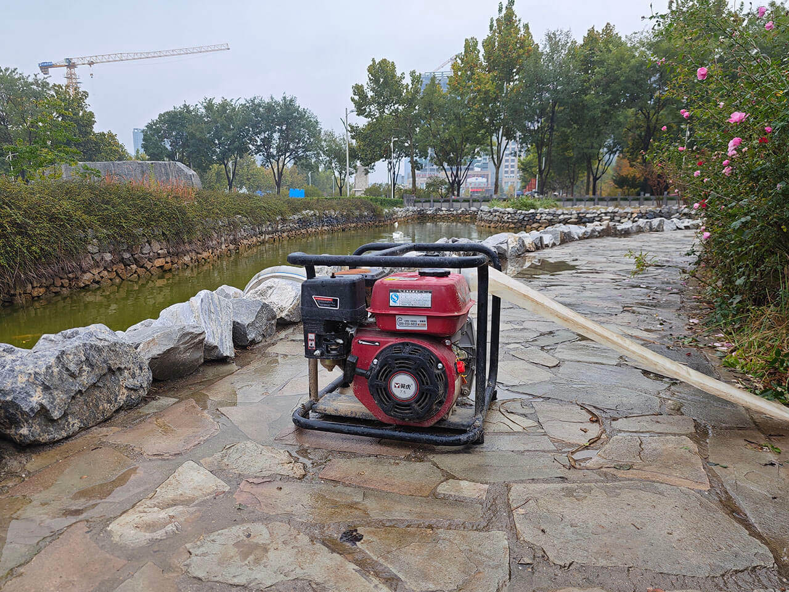
大概是害怕湖面结冰学生瞎玩酿成事故，冀大开始抽干图书馆门前的小池塘了，可爱小鸭鸭要另寻他处了。
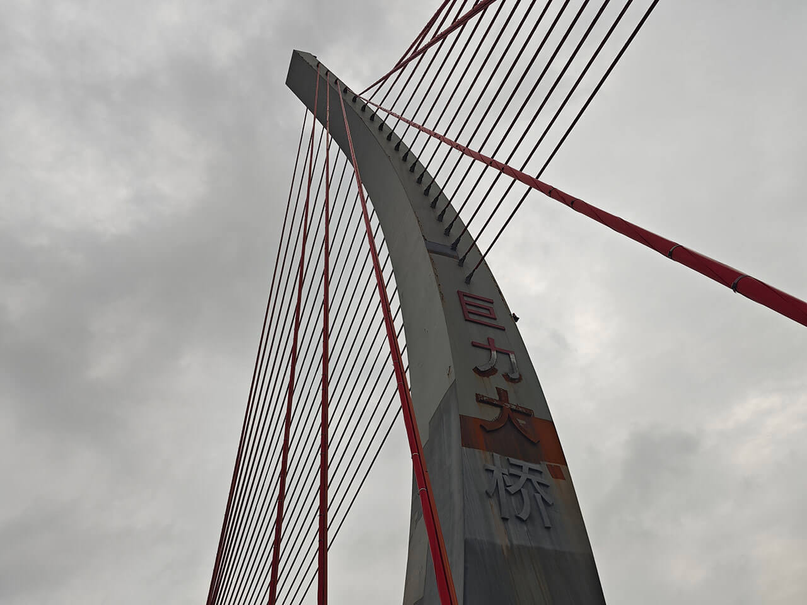
傍晚散步时间。东湖公园逛腻了，去走走巨力大桥吧。
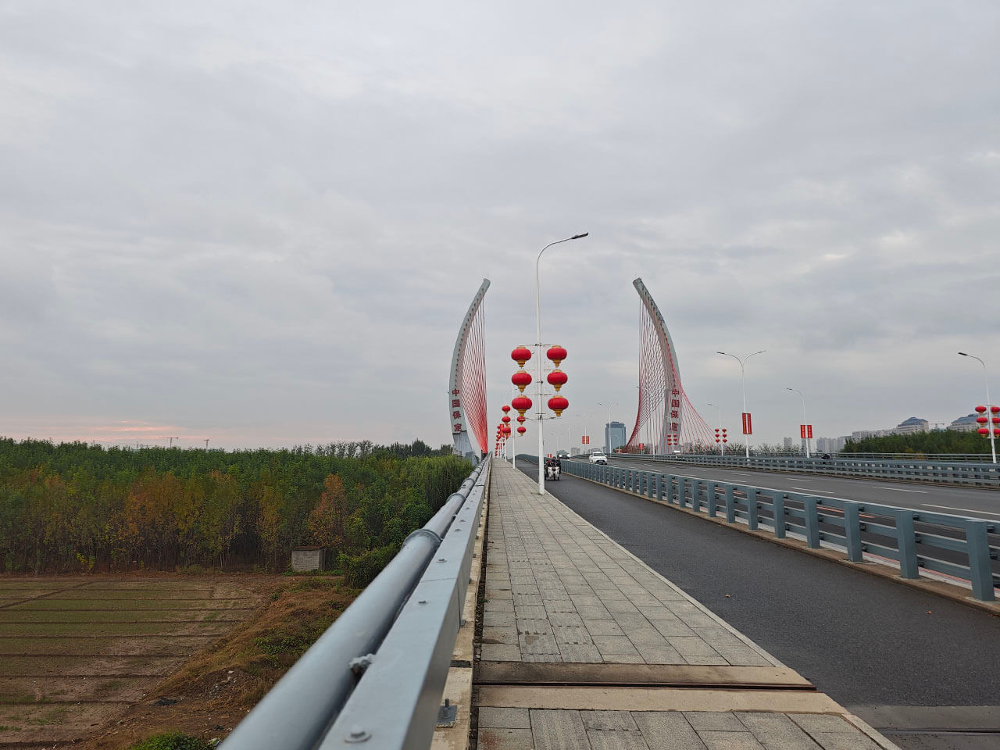
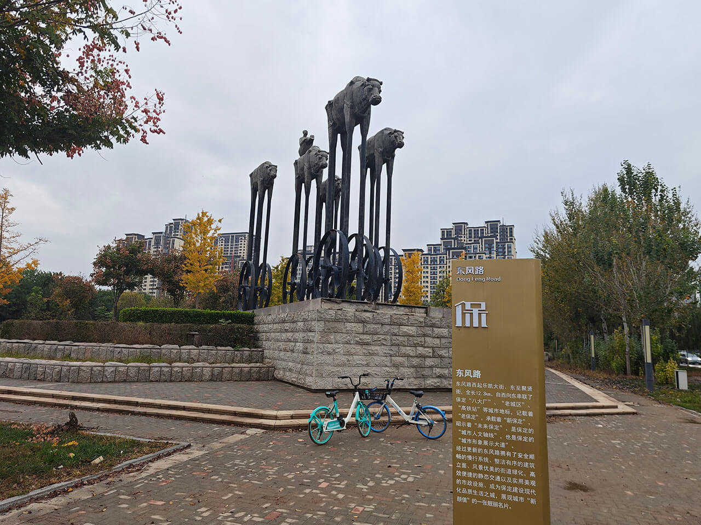
东风路西起乐凯大街、东至聚贤街，全长 12.3 km。自西向东串联了保定“八大厂”、“老城区”、“高铁站”等城市地标，记载着“老保定”，承载着“新保定”，昭示着“未来保定”。是保定的“城市人文轴线”，也是保定的“城市形象展示大道”。
经过更新的东风路拥有了安全顺畅的慢行系统、整洁有序的建筑立面、风景优美的街道绿化，高效便捷的静态交通以及实用美观的市政设施、成为保定建设现代化品质生活之城，展现城市“新颜值”的一张靓丽名片。
保定的公路修得笔直，七一路和东风路两条大路横跨整个保定城。
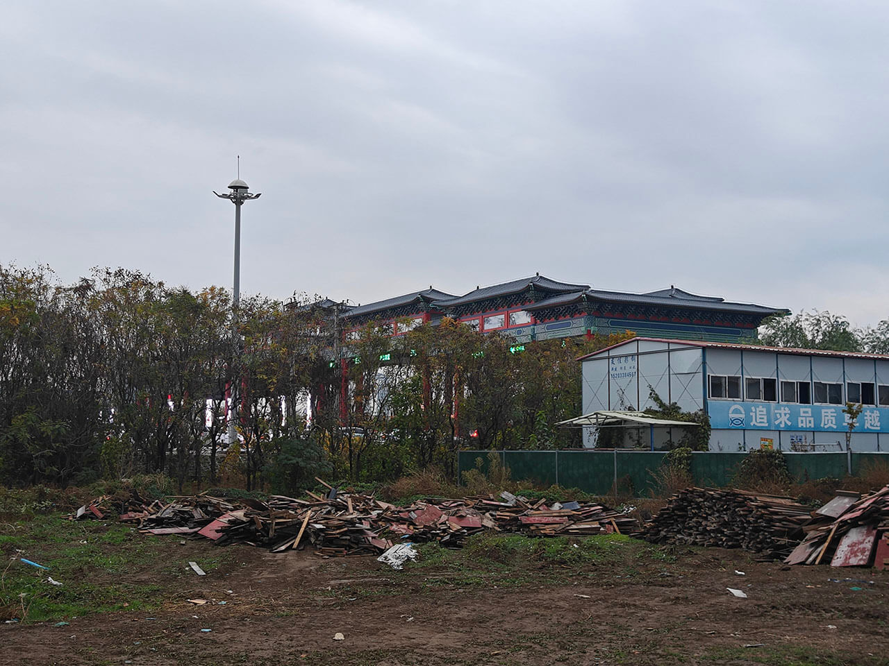
本来想走到收费站去看看的，但是找不到好的拍摄机位，只好就此作罢。
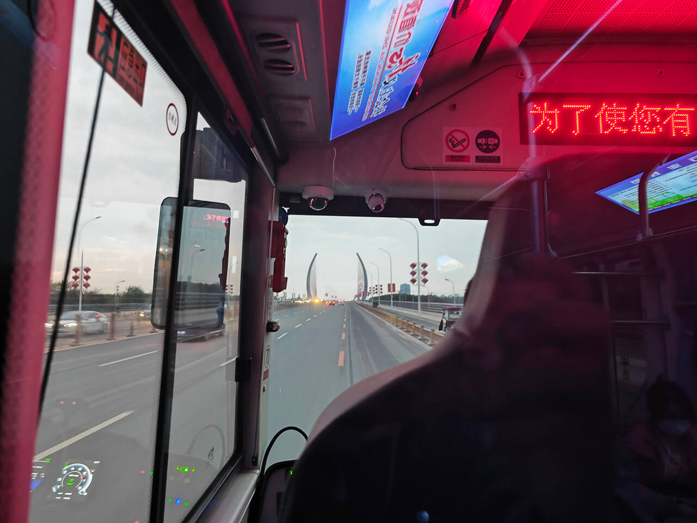
走累了，坐公交车回冀大。保定的公交车太少了，等了快半小时才等上。
11.6
保定的最低气温来到了零下，而厦门的最高温却高达 31 ℃！
为什么这个时候还会有苍蝇啊！实验室里有好几只苍蝇在乱飞，估计是觉得室内暖和就全来室内了。
午睡的床铺变得十分香甜，都不想起来了。
北京开始供暖了，而保定估计还是 11.15 ？其实还好，除了大晚上骑电驴有点冷，室内还是处于可以接受的范围。
11.7
经过将近一个月的调试，又要把生成的数据送进炼丹炉了。一共需要 10000 张图片，而生成 1000 多张时电脑就会崩溃重启一次，每次启动又要将近 10 分钟，给我气笑了。
11.8
组会又给我干困了……导师说研二要抓紧时间了，马上研究生生活就要过半了。可是实验效果还是不太行啊，可恶！
11.9
实验效果不太好，又想开摆了。
今天的空气特别好，好评！
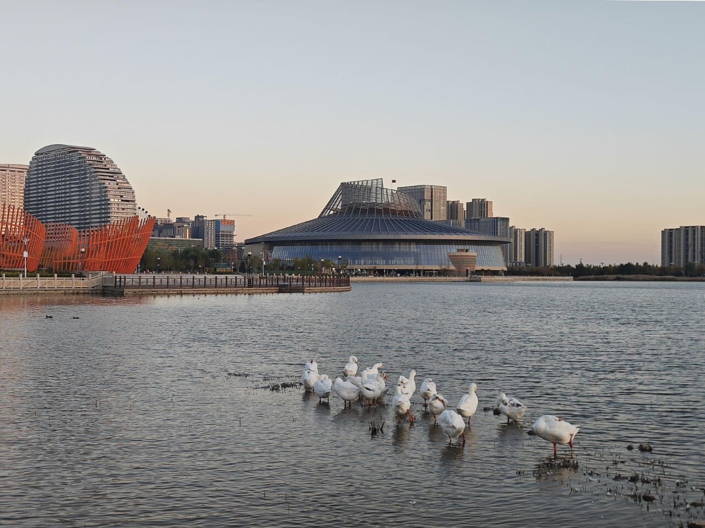
东湖上的鸭鸭。
11.10
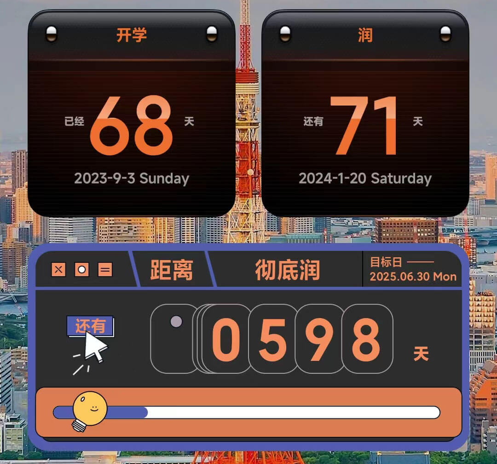
这个学期即将过半了！
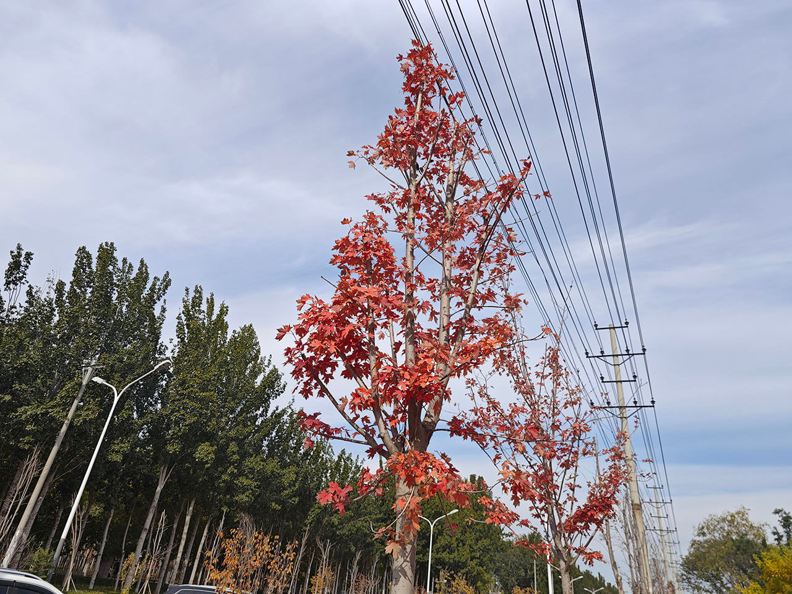
冀大的树有红有黄有绿。
又要到周末了！之前的生日都很平淡不怎么想过：
- 15 年生日跟爸爸妈妈爷爷奶奶去茶亭附近吃了顿肉蟹煲。
16 年生日是一点也不记得了。
17 年的生日在月考，考的生物和英语，考得一塌糊涂。
- 18 年生日记得前一天学院开迎新晚会，然后就顺势熬夜到 0 点当过生日了。
- 19 年生日跟舍友去西门破街整了点地摊小吃，然后去华丰贺氏整了个蛋糕。
- 20 年生日是一点也不记得了。
- 21 年生日那段时间在准备考研，奖励自己上午没做数学卷子，傍晚跟小迷糊小小怪吃了顿黄焖鸡。
- 22 年生日那天刚好不用测核酸，在实验室里写 Unity 玩。
在 24 岁生日即将到来，突然想折腾一把。
之前舍友想去雄安看招聘会，于是我规划了一下，陪他们参观后就直接白洋淀站坐去石家庄了，体验一下一个人旅行自由自在的感觉。
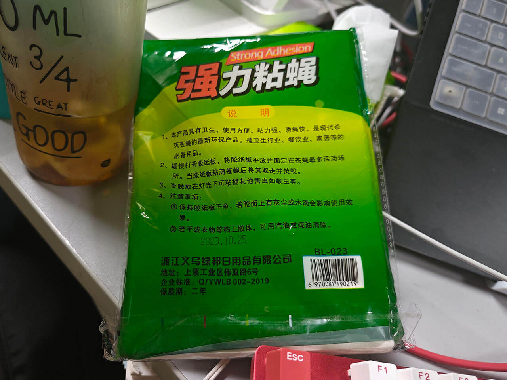
在实验室埋伏好粘蝇纸，下周见 324！
11.11-11.12
Happy weekend!
从石家庄回来后，遵守之前的约定，去未来石整顿火锅。
感觉只要是火锅就不会不好吃，而且我特别喜欢这家店的自助甜品。
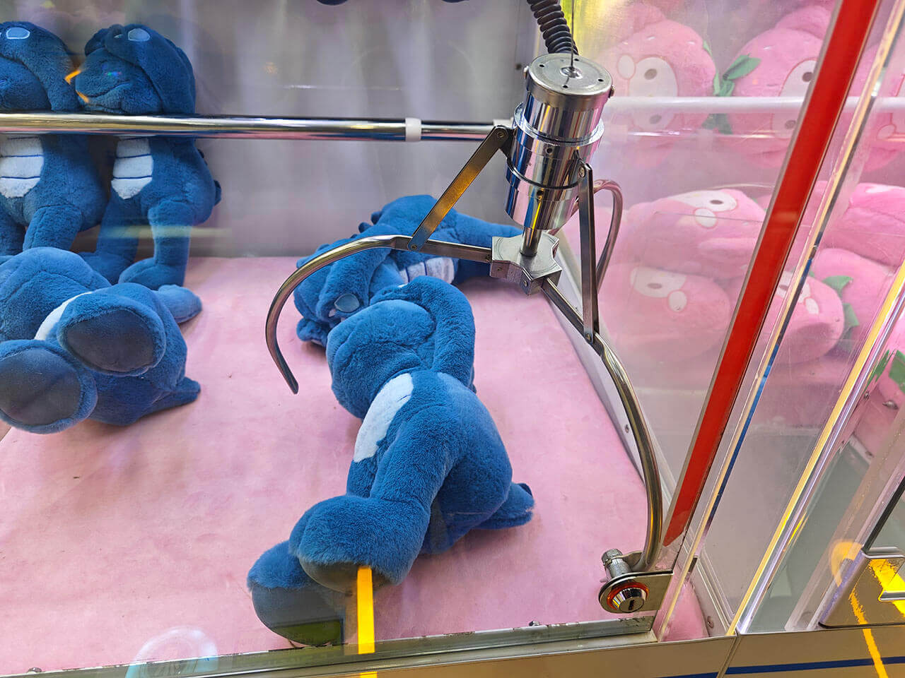
吃完饭去抓娃娃，50 块钱 p 也没抓到，最后还把抓娃娃机卡坏了……